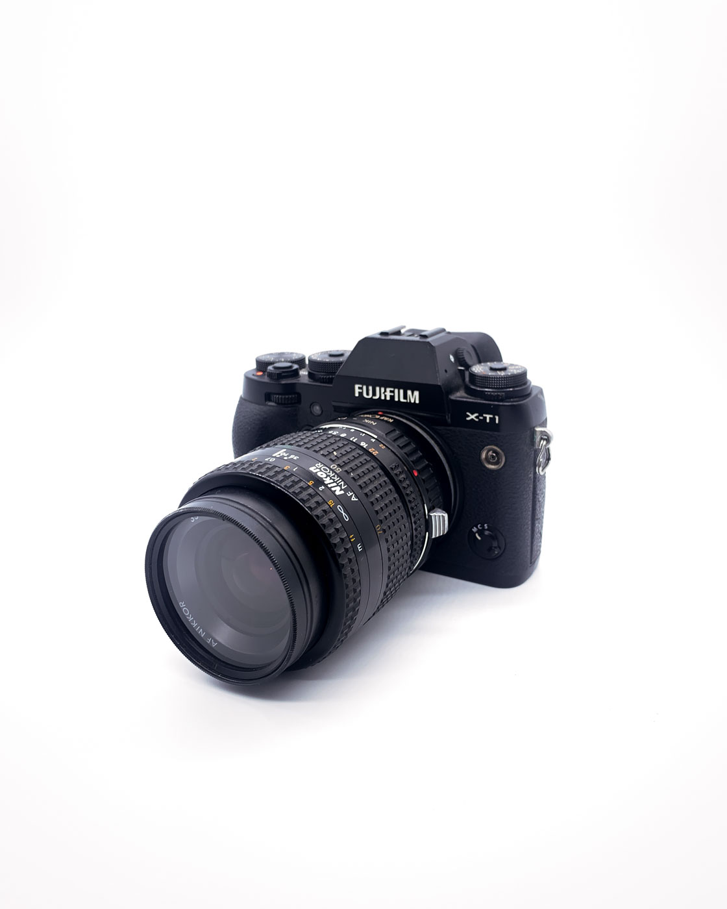
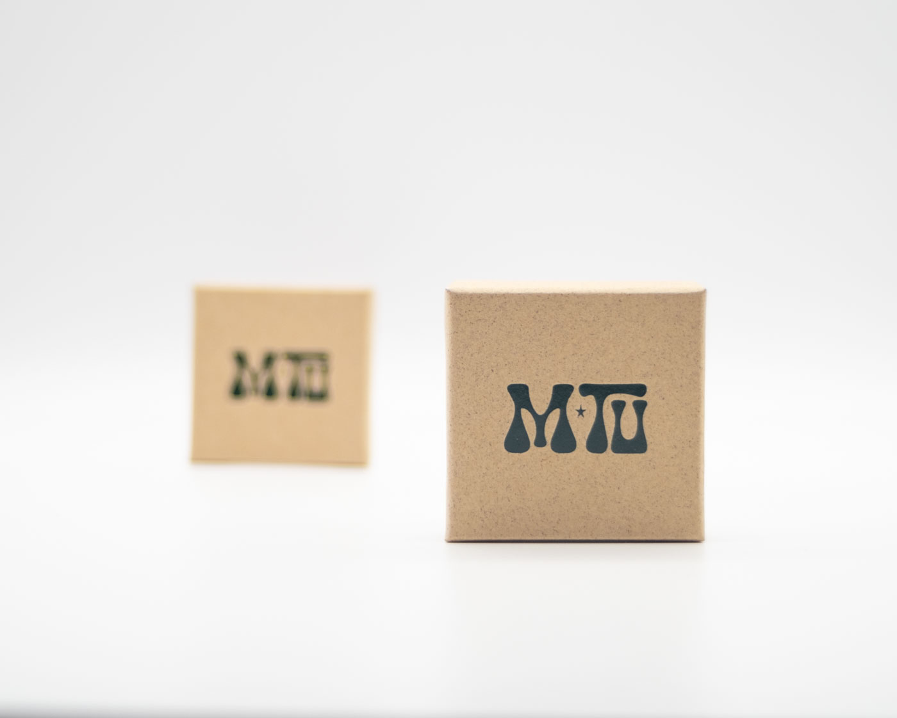
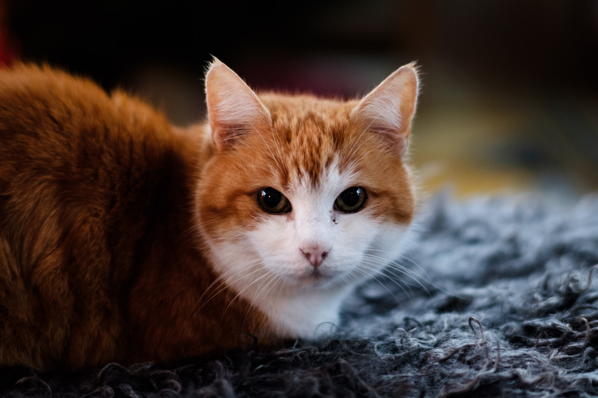
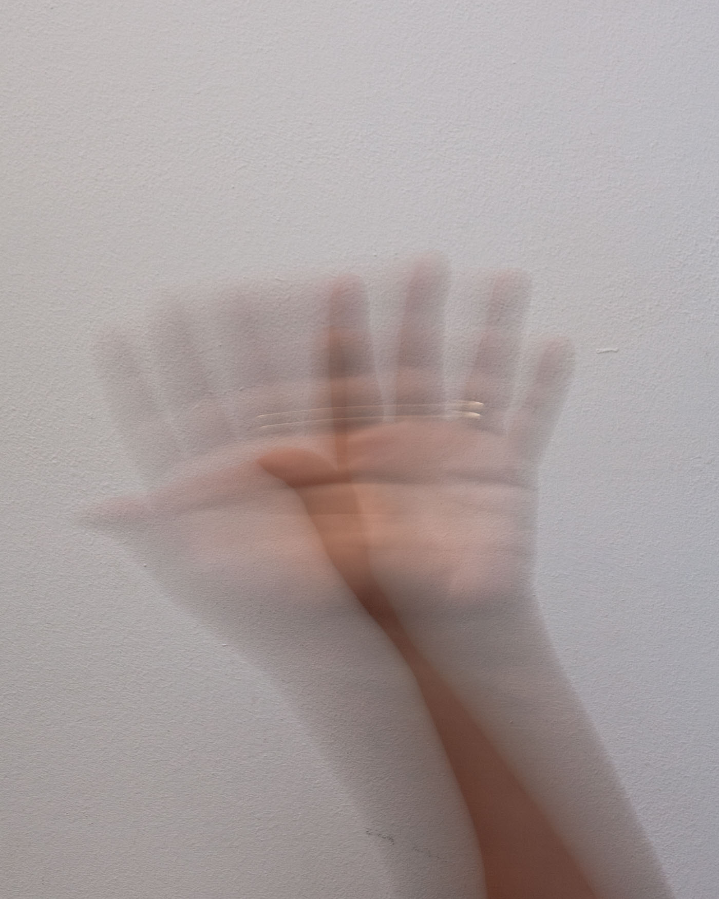
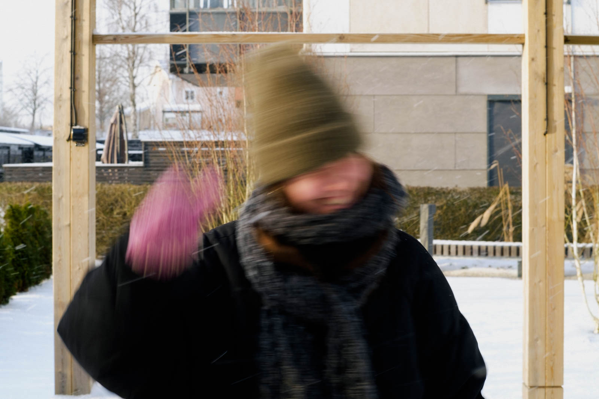

A photo is the result of light being captured on a photo sensitive surface. In modern cameras, this is an
electronic sensor, while older cameras used film. The exposure of your image is controlled by how much light the
sensor or film is exposed to. This guide will give you a basic understanding of the three main settings of
a camera that effect exposure: aperture, shutter speed, and ISO. Together, these form the Exposure Triangle,
each setting interacts with the others to balance the light captured, ensuring your photos are well-exposed.

Aperture
Aperture is the opening in a camera lens. It controls the amount of light entering and the depth of field. A
large aperture allows more light and creates a shallow depth of field with a blurred backround and a small
aperture limits light and provides a deep depth of field with more of the scene in focus.
Use the buttons on the right to change the aperture and see the effect.

large or small aperture?

shutterspeed
Shutterspeed determines the duration the sensor is exposed to light. A fast shutter speed (1/200 or faster)
captures motion crisply, while a slower shutter speed will result in motion blur for moving subjects. If you are
using a small aperture you will need a slower shutterspeed to compensate for the loss of light.
Use the buttons on the right to change the shutterspeed and see the effect on a moving
subject.

fast or slow shutterspeed?

ISO
If your image is too dark but you can't use a larger aperture or slower shutterspeed, increase the ISO. This
adjusts
the sensor's sensitivity to light. However, higher ISO brings more noise, degrading image quality. So, keep ISO
as low as possible for clean images. How far you can push ISO depends on your camera.
The image on the right is zoomed in to show the effect of noise. Use the buttons to
see how the noise is increasing at higher ISO settings.